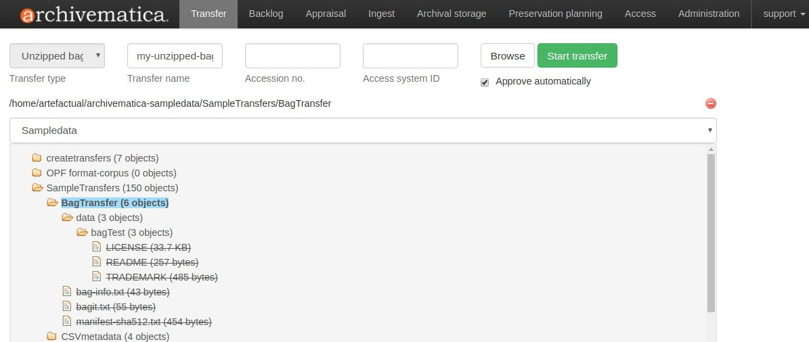
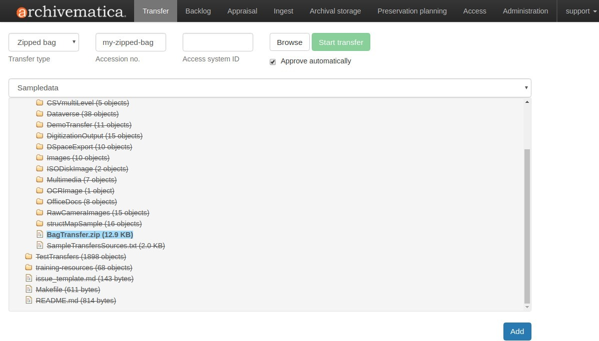
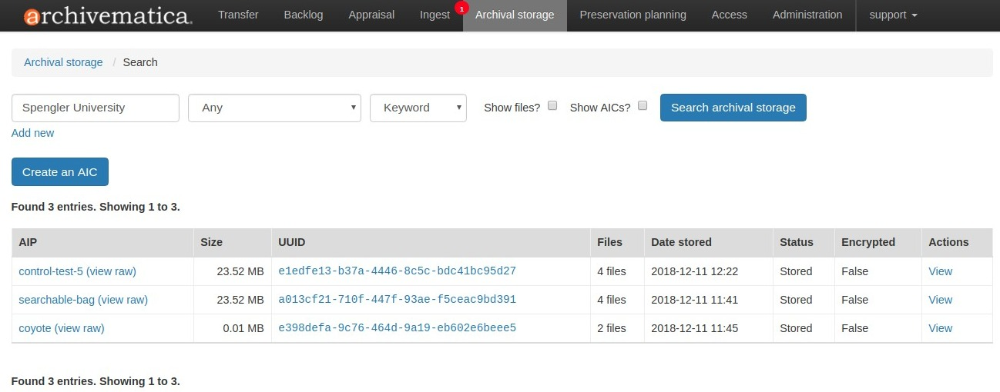
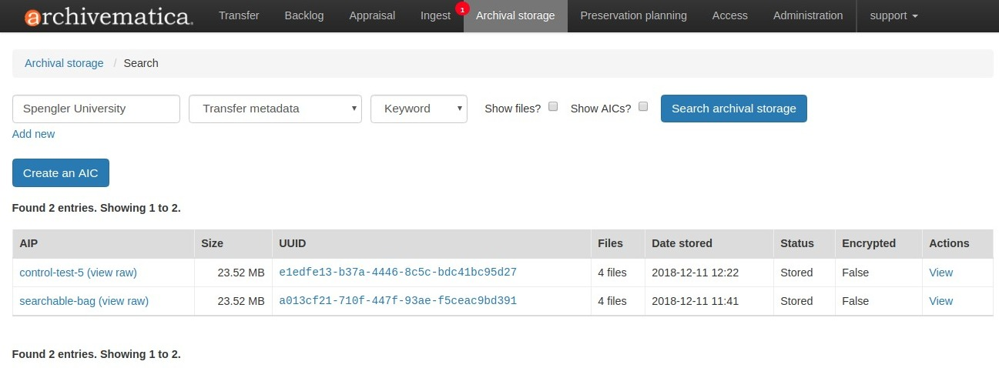
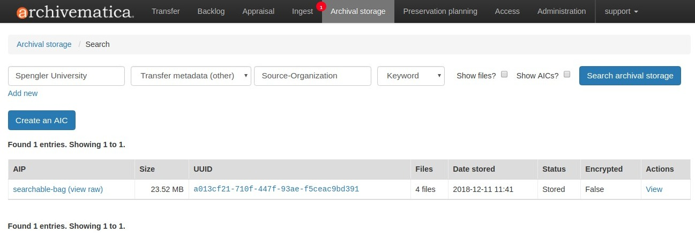

圧縮バッグと解凍バッグ¶
Archivematica は、米国議会図書館の BagIt 仕様に従ってパッケージ化された素材のインジェストをサポートしています。ユーザーは、適切な 転送タイプ を使用して、圧縮バッグと解凍バッグの両方をインジェストすることができます。
このページ上
バッグ構造の要件¶
バッグは、 BagIt 仕様の要件に準拠する必要があります。そうでない場合、Archivematicaは失敗し、ファイルはクリーンアップされて削除されます。
バッグが不注意で故障する原因となる問題には、以下のようなものがあります：
バッグが作成された後に、見えないファイルがバッグに追加されました。
bagit.txt にあるエンコード要件は、 bag-info.txt にある文字のエンコードと一致しません。
バッグ作成後にファイル（例：metadata.csv）を編集します。
構造上の問題。バッグの構造化の方法については、 バッグにメタデータを追加 を参照してください。
バッグの設定¶
バッグは、特定の保存目標を達成するために様々な方法で構成できます。
解凍されたバッグ¶
アンジップされたバッグは、手作業で作成するか、 BagIt-python や Bagger のような BagIt ツールを使用して作成できます。バッグは、 BagIt の仕様に準拠していなければなりません。
アンジップされたバッグをインジェストするには、TransferタブのTransfer Typeドロップダウンメニューから Unzipped bag を選択し、Transferブラウザから素材を選択します。
{kind=link}

上のスクリーンショットは、保存すべき3つのデジタルオブジェクト（ LICENSE 、 README 、 TRADEMARK ）と、BagIt仕様で要求される付属ファイル（ bag-info.txt 、 bagit.txt 、およびマニフェストファイル（この場合はsha512チェックサム用））を含むシンプルなバッグを示しています。保存するべきデジタルオブジェクトは、 data というサブディレクトリ内にあることに注意してください。
転送処理の詳細については、転送ページの process transfer を参照してください。
圧縮されたバッグ¶
ジップされたバッグは、手作業で作成するか、 BagIt-python や Bagger のような BagIt ツールを使用して作成できます。バッグは BagIt の仕様に準拠している必要があります。
ジップバッグをインジェストするには、ダッシュボードの転送タブのドロップダウンメニューから、転送タイプ ジップバッグ を選択します。転送ブラウザを開くと、 .zip 、 .tgz 、 tar.gz の圧縮形式を使用した素材のみ転送に選択できます。これらは、Archivematicaがzip形式で転送できる唯一の圧縮形式です。
{kind=link}

バッグ自体の内部構造は、上図のように アンジップされたバッグ のようにします。
ジップされたバッグの転送では、常にバッグの名前が転送名として使用されることに注意してください。
転送処理の詳細については、転送ページの process transfer を参照してください。
説明/権利メタデータと提出文書をバッグに追加¶
標準的な転送と同様に、解凍および圧縮されたバッグ転送に、説明および権利メタデータを追加することが可能です。詳しくは、 バッグにメタデータを追加する を参照してください。
バッグを設定するその他の方法¶
標準的な転送設定とバッグを組み合わせるには、次のような他の方法もあります：
しかし、Artefactual は、すべての設定をテストするわけではありません。ワークフローを生産で実行する前に、独自の設定を徹底的にテストし、結果を確認することをお勧めします。転送用バッグのさまざまな設定方法について質問がある場合は、 Archivematica ユーザーフォーラム への投稿をご検討ください。
バッグのメタデータを索引付けして検索¶
Archivematica 1.4 以降では、 bag-info.txt ファイル内のフィールドは Elasticsearch のソースメタデータとしてインデックス付けされ、バッグの転送が保管された後、[アーカイブ保管] タブでその内容を検索できるようになります。
bag-info.txt ファイルのラベルは、METS sourceMD フィールドで XML としてシリアライズされ、AIP の Objects ディレクトリにリンクされます。
たとえば、bag-info.txt には次の情報が含まれる場合があります (サンプルは https://tools.ietf.org/html/draft-kunze-bagit-10). から提供されます)
Source-Organization: Spengler University
Organization-Address: 1400 Elm St., Cupertino, California, 95014
Contact-Name: Edna Janssen
Contact-Phone: +1 408-555-1212
Contact-Email: ej@spengler.edu
External-Description: Uncompressed greyscale TIFF images from the Yoshimuri papers colle...
Bagging-Date: 2008-01-15
External-Identifier: spengler_yoshimuri_001
Bag-Size: 260 GB
Payload-Oxum: 279164409832.1198
Bag-Group-Identifier: spengler_yoshimuri
Bag-Count: 1 of 15
Internal-Sender-Identifier: /storage/images/yoshimuri
Internal-Sender-Description: Uncompressed greyscale TIFFs created from microfilm and are...
結果の AIP の METS XML ファイルに保存されると、上記の情報は次のように表現されます：
<mets:amdSec ID="amdSec_14">
<mets:sourceMD ID="sourceMD_1">
<mets:mdWrap MDTYPE="OTHER" OTHERMDTYPE="BagIt">
<mets:xmlData>
<transfer_metadata>
<Source-Organization>Spengler University</Source-Organization>
<Organization-Address>1400 Elm St., Cupertino, California, 95014</Organization-Address>
<Contact-Name>Edna Janssen</Contact-Name>
<Contact-Phone>+1 408-555-1212</Contact-Phone>
<Contact-Email>ej@spengler.edu</Contact-Email>
<External-Description> Uncompressed greyscale TIFF images from the Yoshimuri papers colle...</External-Description>
<Bagging-Date>2008-01-15</Bagging-Date>
<External-Identifier>spengler_yoshimuri_001</External-Identifier>
<Bag-Size>260 GB</Bag-Size>
<Payload-Oxum>279164409832.1198</Payload-Oxum>
<Bag-Group-Identifier>spengler_yoshimuri</Bag-Group-Identifier>
<Bag-Count>1 of 15</Bag-Count>
<Internal-Sender-Identifier>/storage/images/yoshimuri</Internal-Sender-Identifier>
<Internal-Sender-Description>Uncompressed greyscale TIFFs created from microfilm and are...</Internal-Sender-Description>
</transfer_metadata>
</mets:xmlData>
</mets:mdWrap>
</mets:sourceMD>
</mets:amdSec>
注釈
METS ファイルに解析されるためには、bag-info.txt ラベル (つまり、Source-Organization) が XML に準拠している必要があり、スペースや禁止文字を含めることはできません。
<transfer_metadata> タグに含まれるメタデータは、 Archival Storage タブでの検索に使用できるようになりました。
検索パラメーター を使って、bag-info.txt内のいずれかの用語（すなわち ``Spengler University`` ）を検索すると、 いずれかのフィールド（または AIPストアの検索 に従ってAIP名など）に検索用語を含む保存されたパッケージが表示されるはずです。
{kind=link}

上記の例では、AIP coyote には、bag-info.txt ではなく、説明メタデータに検索フレーズが含まれていました。他の 2 つの AIP には、bag-info.txt に検索フレーズが含まれていました。
検索パラメータとして メタデータを転送 を選択すると、検索結果を絞り込んで、bag-info.txt からのメタデータのみを検索できます。これにより、METS ファイル内の <transfer_metadata> タグ内のものが検索されます。
{kind=link}

検索結果をさらに絞り込むには、 Transfer metadata （other） 検索パラメーターを使用します。これにより、検索したい <transfer_metadata> 内の特定のサブフィールドを定義できます。例えば、検索フレーズ"Spengler University" が Source-Organization フィールドに存在し、他のフィールドに存在しない AIP を検索したい場合などです。
{kind=link}

<transfer_metadata>、またはそのサブフィールドの1つで日付範囲を検索するには、ユーザーは、コロンで区切られたISO日付フォーマットで2つの日付を入力します。例えば、 2015-01-03:2015-04-14 .
トップに戻る 。